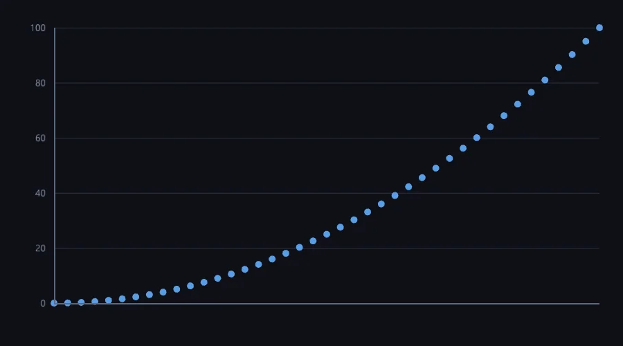

Numeric & optimization
Exactness NumPy lacks, LAPACK-tier decompositions and autodiff; not a NumPy by design.
5 Strong · 5 Solid · 2 Partial · 0 Emerging
Measured against: NumPy · Eigen · GSL · SciPy · Folders: base/number · base/optim · The guide to this area's functions

Rethought from first principles
What Softanza kept from what works, and what it rethought, as the library wrote it down in its design documents and narrations.
The Softanza wayA number should know whether it is exact and say why when it is not, and the frame that bends a result must be visible where the number is used.
Kept from the best practice
- Machine numbers stay IEEE-754 double precision, with half-even rounding as the stated default, the accounting rule, because half-up rounding drifts a long ledger upward. source
- Numerically stable textbook methods by default: compensated summation, Welford moments, and the standard LU, QR, Cholesky and SVD decompositions. source
- Results are judged against reference oracles — NumPy and exact rationals — with a tolerance derived from the problem's conditioning, never a hand-picked constant. source
Rethought
- One number type, many inner forms — integer, big integer, rational, decimal — chosen automatically, because users should not carry a type decision the system can make. source
- A number knows whether it is exact, and WhyNotExact() names what was lost, because numeric surprise usually comes from a frame the caller could not see. source
- The regime travels with the value: money keeps two places with banker's rounding, an exact number refuses to become approximate, instead of a global mode set by whoever ran last. source
- An optimization model can be an object, a sentence or a file, all building one model, so two surfaces can never silently disagree; Why() names the solver used. source
The most rigorously measured module in the library: P0-P7 complete, ~1,827 assertions, every parallel route gated by a measured threshold and every kernel bit-identical under threads. It leads with something NumPy has no concept of, exactness: an arbitrary-precision numeric tower with a register that tells you why a value is exact or not. It reaches LAPACK-tier decompositions and ships reverse-mode autodiff with L-BFGS. It is deliberately not a NumPy: no broadcasting, raw matmul peak below tuned BLAS, and it refuses what it cannot measure a use for.
What a maker does with it, and what stands out
- An exactness register (IsExact, Why, Representation) that NumPy has no concept of
- General non-symmetric eigen with a Francis double-shift QR, hand-rolled and verified
- Reverse-mode autodiff paired with a real quasi-Newton (L-BFGS) optimizer
- Nothing parallel ships without a measurement; many gaps are deliberate, measured refusals
What is owed
- Arbitrary-N and multi-dimensional FFT (mixed-radix / Bluestein, rfft, 2-D)
- Complete the complex surface: log, inverse-trig and general powers
- Adaptive quadrature and an ODE stepper
- Broaden sampling distributions (binomial, Poisson, gamma, beta, Dirichlet)
The Softanza way, run
What Softanza does differently in this area, shown by code taken from its narrations and guards, and run for this page.
One divided by three does not pretend to be exact, and the number itself says why.
oThird = new stzNumber("1")
oThird.Divide("3")
Then("1 / 3 does NOT claim to be exact", oThird.IsExact(), FALSE)
Then("...and says why", StzFindFirst("does not terminate", oThird.Why()) > 0, TRUE)THEN 1 / 3 does NOT claim to be exact [PASS] THEN ...and says why [PASS]
run on 2026-10-01 21:17 inside the library at commit 0e72e2e2c; taken from base/test/number/numeric_exactness_narrated.ring
A price declared as money stays money: a rate applied to it lands on two decimal places, not 2.9985.
oPrice = StzMoneyQ("19.99")
oPrice.MultiplyBy("0.15")
Then("a rate applied to it lands on money, not 2.9985", oPrice.Content(), "3.00")THEN a rate applied to it lands on money, not 2.9985 [PASS]
run on 2026-10-01 21:17 inside the library at commit 0e72e2e2c; taken from base/test/number/numeric_regime_narrated.ring
An optimization problem written as a sentence is solved like the same model built in code, and reaches 130.
oS = StzOptimNaturally("
maximize 3*x + 2*y
where x is between 0 and 40
and y is a whole number at least 0
keeping x + y under 50
and keeping 2*x + y under 80
")
oS.SolveWith(:auto)
? oS.Objective()130
run on 2026-10-01 21:17 inside the library at commit 0e72e2e2c; taken from base/test/optim/optim_modelling_narrated.ring
The lanes, one by one
Lanes and their notes are quoted as they were read at the source, on Read from the source on 2026-09-16.